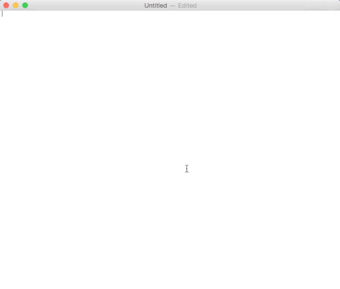

phdcomics
PubPol 590 -- Workshop 1
Whether you are working on your own project or on a team project, version control is essential. It's like using "track changes" in MS Word but cleaner and more dependable. It's also free, works on any operating system, and can track any text-like document -- not just a single MS word document. Most importantly, version control allows you to confidently and fearlessly get work done -- your own or your team's -- while avoiding file-clutter and file-renaming headaches. In short, you'll avoid this:
phdcomics
In this class, we will be using a version control system called Git and a popular online repository hosting service called GitHub. GitHub is a powerful tool for building projects and collaborating with other researchers. To incentivize mastery of Git, any and all work for this class must be "pushed" to GitHub to receive credit.
Let's get started.
Objectives
git versionGitHub has a great interactive introduction to Git command line. To familiarize yourself with how Git works, as well as the most frequently used commands, please take 15 minutes to run through tryGit.
You can find more detailed help about the basic Git commands being used here.
Before using Git, you need to configure a few things, like your user.name and user.email.
Here is what it looks like:
$ git config --global user.name "Danton Noriega (DUKE)"
$ git config --global user.email "drn12_at_duke.edu"Just replace your own name and email for mine listed above.
You can always check to see your global configurations running the following:
$ git config --global -l # option -l stands for "list"
user.name=Danton Noriega (Duke)
user.email=drn12@duke.edu
color.ui=auto
core.editor=subl -n -wBefore we use Git locally on our own files, we should review a few Unix commands that are necessary for navigating through files and directories (aka the "file system") in the Terminal (Mac OS X) or Git Bash (Windows).
pwd -- ("print working directory") this displays the current working directory cd -- ("change diretory") is used to enter or exit (i.e. "change") directories. ls -- ("listing") will display all files and folders in the current working directory. You can use the option -F to distinguish directories (folders) from files and option -a to display all files and folders, even hidden ones. rm -- ("remove") is used to delete files or folders. The system will not allow you to remove nonempty folders without a special option. mv -- ("move") is used to move files into directories or to rename files. mkdir -- ("make directory") creates a directory/folder
Also, for Mac OS X users, I recommend enabling tab completion in the Terminal. Git Bash enables tab completion by default so Windows users need not worry about enabling it. Tab completion takes some getting used to but it greatly speeds up writing command line code.
Anything with a $ first is an inputted command. Just below the command is the output (if produced).
$ cd ~
$ pwd
/Users/dnoriega
$ ls
Applications Documents Google Drive Pictures
Downloads Library Public
Box Sync Dropbox Movies Samsung
Desktop GitHub Music Sites
$ cd GitHub/
$ ls -F -a
./ ../ .DS_Store PubPol590/
$ cd PubPol590/
$ ls -F -a
./ ../ .git/ .gitattributes
$ cd ..
$ pwd
/Users/dnoriega/GitHub2You are now going to put everything together and create a local repository.After that, you will create a matching online ("remote") repository on GitHub and then create, stage, commit, and push a simple text file from your local repo to GitHub.
Create a new folder on your computer that will house all your repositories. Name it something logical like "GitHub" or "Repositories". Let's assume you name it "GitHub". Next, go inside the folder and create another folder called "PubPol590". You can do this manually or using the Unix Command Line in the Terminal (Mac) or Git Bash (PC). In Unix command line, it would look something like this:
$ cd ~ # change to home directory $ mkdir GitHub # create directory "GitHub" $ cd GitHub # move inside "GitHub" $ mkdir PubPol590 # create directory "PubPol590" $ cd PubPol590 # move inside "PubPol590"
Go to your new folder "PubPol590" using Unix command line and initialize the repository. $ cd ~/Github/PubPol590/ # move inside "PubPol590" $ git init # initialize "PubPol590"
Login to your GitHub account. Make a new repository with the same name as your local repository (PubPol590): 
Open up any text editor e.g. TextEdit (Mac) or Notepad (PC). Type in anything you'd like then save the file in your new repository, PubPol590. For example: 
First, check the status of your repo.
$ git status
On branch master
Untracked files:
(use "git add <file>..." to include in what will be committed)
ultimate.txtGit is letting us know that there is a file that has not yet been "staged". That is, the file has not been added to the list of changes we want to track. We can add ("stage") the files with the $ git add [file_name] then check the status again:
$ git add ultimate.txt
$ git status
On branch master
Changes to be committed:
(use "git reset HEAD <file>..." to unstage)
modified: ultimate.txtNext, we "commit" the changes to our staged files. We do this by using the $ git commit -m "[write some text here]" command. The option -m stands for message. Git will not allow you to commit files without a small commit message, so we use -m followed by short message in quotes to satisfy Git.
$ git commit -m "facts about ultimate"
[master f15b72e] facts about ultimate
1 file changed, 1 insertion(+)
create mode 100644 ultimate.txtLet's check the status of our repo one more time.
$ git status
On branch master
nothing to commit, working directory cleanSuccess! All our changes have been stored in our local repository. If we ever need to review our commits, we can use $ git log or, in a more condensed form, $ git reflog.
$ git log
commit f15b72e53b637d37c1ce53b52626faef78476670
Author: Danton Noriega (Duke) <drn12@duke.edu>
Date: Sun Jan 11 22:38:21 2015 -0500
facts about ultimate
$ git reflog
f15b72e HEAD@{0}: commit: facts about ultimateAll that is left for us to do is "push" our commits to our repo on GitHub.
Go to your online repo on GitHub and copy the URL. Assuming you created the repo correctly, you should have a link that looks like https://github.com/DRNoriega/PubPol590/ but with your GitHub username in place of DRNoriega. Make sure you're in your local repository and then run the following:
$ git remote add origin https://github.com/DRNoriega/PubPol590/What Git is doing roughly translates to "add the remote repository that is located at https://github.com/DRNoriega/PubPol590/ and give it the local nickname origin". You can use any nickname but origin is the common choice for most programmers who use with git (I have no idea why).
Let's check to see that command ran successfully by using $ git remote -v. The option -v stands for "verbose". This will give us a list of the nicknames we have stored locally and the addresses they point to:
$ git remote -v
class https://github.com/DRNoriega/PubPol590 (fetch)
class https://github.com/DRNoriega/PubPol590 (push)Everything looks good. The last step is to "push" our current commit. (We have yet to talk about "branching" but just know that the default nickname for any initial branch is master.)
Recall that the nickname for our remote repo is origin. The nickname of our local branch is master. Thefore, we want to "push" to origin the commits we have staged in master.
$ git push -u origin master
Counting objects: 5, done.
Delta compression using up to 8 threads.
Compressing objects: 100% (2/2), done.
Writing objects: 100% (3/3), 333 bytes | 0 bytes/s, done.
Total 3 (delta 0), reused 0 (delta 0)
To https://github.com/DRNoriega/PubPol590
aadcb91..3306938 master -> master
Branch master set up to track remote branch master from origin.Your output will likely be different from mine, but it gives you an idea of what to expect. Note the use of option -u. This option tells Git to remember where we are pushing to, and from where, so that next time we can just type $ git push.
You now know the basics of Git. Next, you will learn how to use Git and GitHub to collaborate using the commands fetch, merge, and pull. You will also be shown how and when to use the commands branch, checkout, and reset.